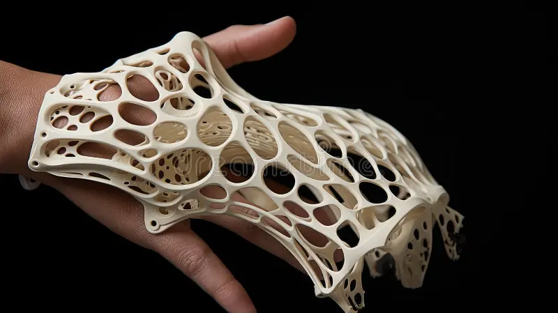
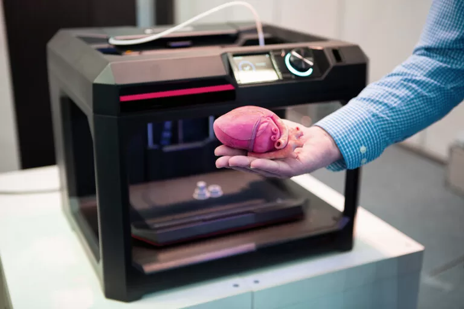
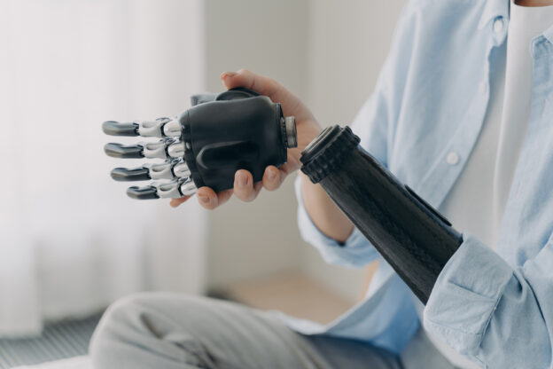
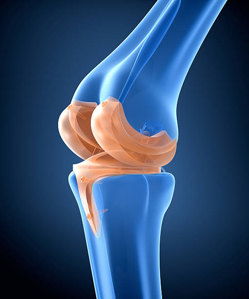
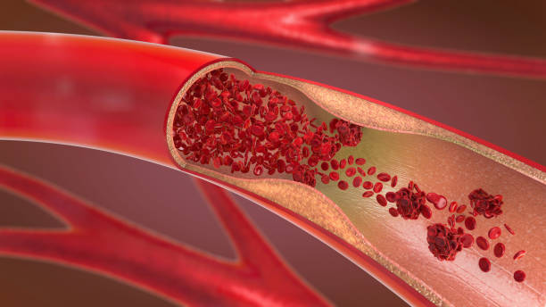
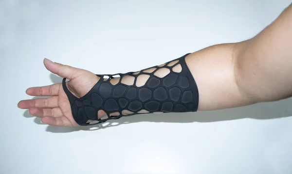
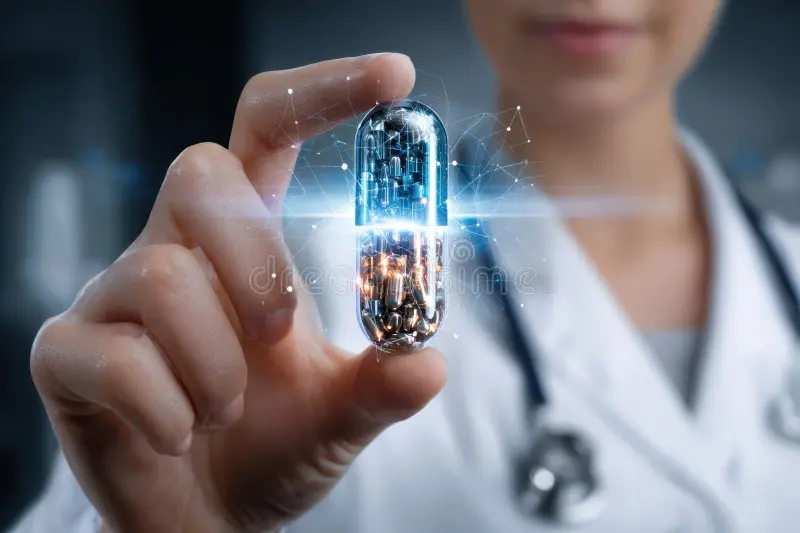

IMPRESSÃO 3D COMO AUXÍLIO À MEDICINA
TECNOLOGIA NA MEDICINA
1. A Impressão 3D na medicina
Na medicina a impressão 3D tem um papel fundamental para ela,
auxiliando na otimização, visando que é um método mais rápido
e menos custoso do que outros, podendo criar, por exemplo,próteses
personalizadas para cada pessoa.
Em geral esse produto visa a adaptabilidade no dia a dia e o bem estar
de cada pessoa, alguns exemplos que esse dispositivo pode Criar:
Ossos
A impressão 3D de ossos, geralmente em materiais biocompatíveis como
o titânio, é utilizada para criar implantes ósseos personalizados. Essa abordagem
é fundamental em cirurgias de reconstrução facial ou para corrigir defeitos
congênitos, garantindo que o implante se encaixe perfeitamente na anatomia do paciente,
o que aumenta a taxa de sucesso da cirurgia e acelera a recuperação.

pt.dreamstime.com
Órgãos
Embora a impressão de órgãos inteiros para transplante ainda esteja em fase de
pesquisa avançada (bioimpressão), a tecnologia já é usada para criar modelos de órgãos em
tamanho real. Esses modelos são réplicas exatas da anatomia do paciente, permitindo que
cirurgiões planejem procedimentos complexos com antecedência, praticando a cirurgia em um
modelo antes de operar o paciente. Isso reduz o tempo de cirurgia e minimiza riscos.

idemais.com.br
Próteses
As próteses impressas em 3D são mais leves, baratas e, principalmente, totalmente
personalizadas. Elas podem ser adaptadas para o encaixe perfeito no corpo do usuário e ter
um design customizado, o que melhora o conforto, a funcionalidade e, consequentemente, a qualidade
de vida. Além disso, a produção mais rápida e acessível permite que pacientes, incluindo crianças,
substituam a prótese à medida que crescem sem um custo excessivo.

pt.vecteezy.com
Cópia de uma cartilagem
A bioimpressão de cartilagem é uma área de pesquisa promissora, especialmente
para o tratamento de lesões em articulações como o joelho. A técnica busca criar uma estrutura celular
que possa ser implantada para reparar ou substituir a cartilagem danificada. A cópia exata da cartilagem
original do paciente pode ser usada para guiar a regeneração de tecidos, auxiliando na recuperação de doenças
degenerativas ou lesões traumáticas.

istockphoto.com
Vasos sanguíneos
Pesquisadores estão desenvolvendo técnicas para imprimir vasos sanguíneos usando materiais
biocompatíveis. Essa tecnologia é crucial para o futuro da bioimpressão de órgãos, pois é necessário criar uma
rede vascular funcional para que um órgão impresso em 3D receba nutrientes e oxigênio. A impressão de vasos
também pode ser usada para tratar doenças cardiovasculares, criando enxertos vasculares personalizados para
pacientes com problemas de artéria, por exemplo.

istockphoto.com
Órteses
Diferente das próteses, que substituem uma parte do corpo, as órteses são dispositivos externos que ajudam
a apoiar, alinhar ou corrigir a função de uma parte do corpo. Órteses impressas em 3D, como talas para fraturas, são
feitas sob medida para o paciente, substituindo gessos tradicionais por estruturas mais leves, respiráveis e confortáveis.

depositphotos.com.br
Medicamentos personalizados
A impressão 3D de medicamentos permite a criação de pílulas com doses e combinações de ingredientes
ativos personalizadas para cada paciente. Isso é especialmente útil para pessoas que precisam de múltiplos medicamentos,
já que a tecnologia pode combinar vários compostos em uma única pílula. Além disso, a impressão 3D pode controlar a taxa
em que o medicamento é liberado no corpo, otimizando o tratamento e reduzindo os efeitos colaterais.

pt.dreamstime.com